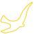

Čo je vides

VIDES je medzinárodná misijná organizácia, vznikla 30. 11. 1987 v Taliansku na podnet mladých a Inštitútu FMA. VIDES pôsobí v 15 krajinách Európy, 8 krajinách Ázie, 2 Afriky, 10 Severnej a v 5 krajinách Južnej Ameriky. Dielo funguje cez miestne skupiny v spolupráci s centrom v Ríme. Na Slovensku bol VIDES založený 12. októbra 2003 ako súčasť Laury, združenia mladých.
Užitočné informácie
Kto môže byť dobrovoľníkom?
Dobrovoľníkom môže byť každý človek dobrej vôle, ktorý dovŕšil šestnásty rok života a ktorý túži darovať časť svojich letných prázdnin nezistne, bezplatne a dobrovoľne iným deťom a mladým. Nezáleží na tom či si z Bratislavy, Košíc, alebo z Oravy, VIDESákom sa môže stať každý.
Čo mám robiť, ak chcem byť dobrovoľníkom?
Stačí, ak nám napíšeš na e-mailovú adresu vides.misie@gmail.com a my Ti napíšeme všetky potrebné informácie. Tešíme sa na Teba.
Kde pôsobíme?
Príprava počas šk. roku prebieha na Slovensku. Počas leta posielame našich dobrovoľníkov do rôznych kútov na Slovensku (Luník IX, Boľkovce, Kokava nad Rimavicou, Orechov dvor, ...), ale aj za naše hranice (Ukraina, Rumúnsko, Albánsko, Anglicko, Sibír, Srbsko, ...).